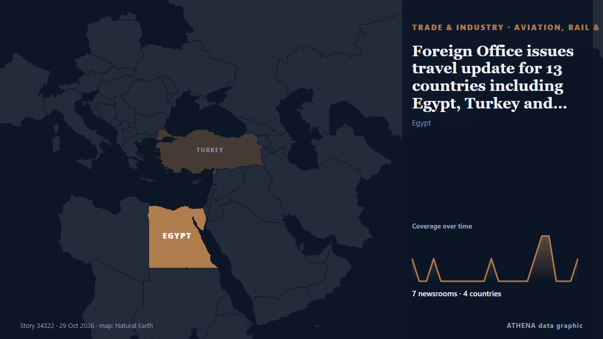

Foreign Office issues travel update for 13 countries including Egypt, Turkey and Jordan

The Foreign Office has updated its Middle East travel advice for 13 countries, including Turkey and Egypt, warning that the regional situation 'remains deeply unpredictable' de Liverpool Echo
Relayé de façon indépendante par 7 médias dans 4 pays depuis le 26 oct. ; premier à l'annoncer : China Daily — page reader ; la couverture faiblit. ATHENA juge le risque accru (5.3/10), surtout en raison de la gravité des dommages décrits et d'éventuels effets en cascade. La confiance est de 76 % (élevée) : 7 médias indépendants le confirment, avec une fiabilité moyenne des sources de 70 %. Qui l'a rapporté : 6 médias en Royaume-Uni · United Kingdom, 1 médias en Chine · China, 1 médias en Kenya. La couverture s'est étendue de 26 oct. à 29 oct., sur 71 heures.
Pourquoi c'est important: Les perturbations du commerce, de l'industrie ou des infrastructures se propagent le long des chaînes d'approvisionnement et changent coûts et délais au loin.
Ce qui a changé : 6 nouveaux articles de 6 rédactions dans les 24 heures jusqu'au 29 oct..
Les titres sont affichés en anglais, tels que publiés.
En un coup d'œil
Sélectionné, noté et rédigé par la méthodologie publiée d'ATHENA. Aucun rédacteur n'intervient sur un événement en particulier. Comment il est produit ›
| 26 Oct 04:36 UTC | 1 |
|---|---|
| 26 Oct 07:36 UTC | 0 |
| 26 Oct 10:36 UTC | 0 |
| 26 Oct 13:36 UTC | 1 |
| 26 Oct 16:36 UTC | 0 |
| 26 Oct 19:36 UTC | 0 |
| 26 Oct 22:36 UTC | 0 |
| 27 Oct 01:36 UTC | 0 |
| 27 Oct 04:36 UTC | 0 |
| 27 Oct 07:36 UTC | 0 |
| 27 Oct 10:36 UTC | 0 |
| 27 Oct 13:36 UTC | 1 |
| 27 Oct 16:36 UTC | 0 |
| 27 Oct 19:36 UTC | 0 |
| 27 Oct 22:36 UTC | 0 |
| 28 Oct 01:36 UTC | 0 |
| 28 Oct 04:36 UTC | 0 |
| 28 Oct 07:36 UTC | 1 |
| 28 Oct 10:36 UTC | 2 |
| 28 Oct 13:36 UTC | 2 |
| 28 Oct 16:36 UTC | 0 |
| 28 Oct 19:36 UTC | 0 |
| 28 Oct 22:36 UTC | 0 |
| 29 Oct 01:36 UTC | 1 |
| 26 Oct 16:08 UTC | 4.9 |
|---|---|
| 28 Oct 09:52 UTC | 5.1 |
| 28 Oct 16:43 UTC | 6.7 |
| 30 Oct 10:55 UTC | 5.3 |
| 30 Oct 10:55 UTC | 5.3 |
Pourquoi ces chiffres
Importance
Risque
Confiance
La couverture : qui l'a annoncé, et quand
titre tel que publié · ouvre l'original- China Daily — page reader · Chine · ChinaEurope on high alert after weekend riots
- WalesOnline · Royaume-Uni · United KingdomIs it safe to travel to Europe right now? Latest travel advice from UK Foreign Office as riots continue
- WalesOnline · Royaume-Uni · United KingdomTransport strikes to cause travel chaos across Europe
- Manchester Evening News · Royaume-Uni · United KingdomForeign Office issues travel warnings for 16 countries including Egypt and Turkey
- Liverpool Echo · Royaume-Uni · United KingdomForeign Office issues travel update for 13 countries including Egypt, Turkey and Jordan
- Chronicle Live (Newcastle) · Royaume-Uni · United KingdomForeign Office updates advice for 13 countries including Turkey and Egypt
- People Daily · KenyaUK lists Kenyan counties under travel warning in latest Ebola advisory
- WalesOnline · Royaume-Uni · United KingdomUK Foreign Office issues new travel advice for Middle East including Turkey and Egypt
- Greek City Times · Grèce · GreeceFCDO Travel Advice Update for 13 Countries Including Turkey and Egypt